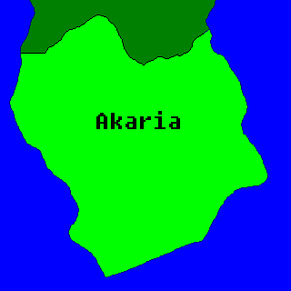

Akaria (ah-CAR-ee-yah) is a country south of Yakinia.
Agaja - Capital
Tcheri - Largest City
Zelina - Ashra's city
...
...
...
...
...
...
...
Zelina River
River Agaja
Tsheri River
...
Independence Day - ??/??/1691
Day of smoke and fire
...
...
...
Currency - kora
Largest religion - kaij
Constitution
Main language - Akarian Yakini
National dish - ?
National flower - Kelwata Ledgi
National animal - ?
...
...
...